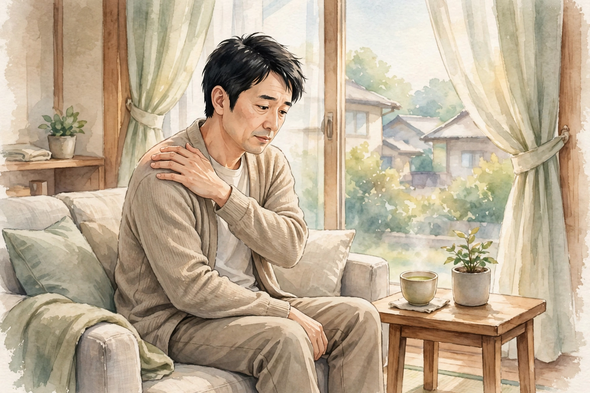
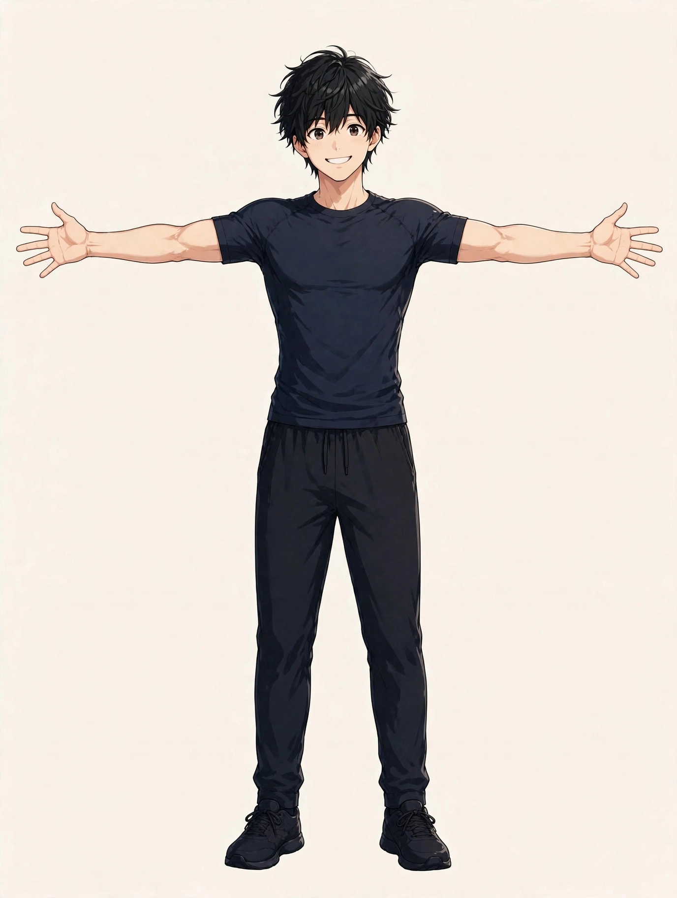

東三国で週末に気になる肩こり
男性の週末のリセットとセルフケア、受診の目安

「平日はなんとか仕事をこなせても、週末になると肩まわりが重く張ってくる」「休みの日にゆっくりしたはずなのに、肩の張りが残ったまま週明けを迎える」「週末に子どもと遊んだり買い物に出たりした日の夜は、肩がこわばる感じがする」。東三国や新大阪、淀川区周辺で働く男性から、週末の肩にまつわるこうした声を聞くことがあります。週末の肩こりの感じ方や背景は人によって異なり、一つの原因だけで説明できるものではありません。この記事では原因を断定するのではなく、週末に気になる肩こりについての一般的な考え方と、考えられる要因、週末をリセットの時間にする過ごし方と日常で試せるセルフケア、医療機関に相談したほうがよい目安をまとめます。同じ週末の場面でも首まわりに絞った東三国で週末に整えたい首こりについてのコラムや、全身の疲れに絞った東三国で週末に整えたい全身の疲労感についてのコラム、平日のデスクワークの場面に絞った東三国でデスクワークの肩こりについてのコラムとは視点を分け、ここでは「週末・休みの日」という場面と「肩まわり」に焦点を当てます。お悩み別のページでも肩こりとしてまとめています。
週末の肩こりとは：平日の疲れが表に出やすい、休みの日の肩の重さと張り
一般に「肩こり」と呼ばれる感覚は、首の付け根から肩、肩甲骨の内側にかけての重さや張り、こわばりとして自覚されることが多いとされています。平日は仕事の緊張感や忙しさで意識しにくくても、週末にほっとして気が緩んだタイミングで「そういえば肩が重い」と気づく方もいます。出方も「週末の朝、寝起きから肩が重い」「土曜は平気でも日曜の夕方から張ってくる」「休みの日に出かけた日の夜に強くなる」など人それぞれです。まずは「週のうち、どのタイミングで強く感じるか」「平日の過ごし方とどう違う日に出やすいか」「首や背中、腕の重さも重なっているか」を自分の言葉で整理しておくと、週末の過ごし方の見直しやセルフケアの選び方、専門家に相談するときの伝え方がスムーズになります。肩こりとあわせて、頭の重さや寝つきの悪さを感じる場合もあり、一週間全体の過ごし方を振り返ってみることも一つの手がかりになります。
考えられる要因の整理
週末に肩こりを意識する背景には、平日の働き方でたまった張りに、休みの日ならではの過ごし方——寝だめや長い画面時間、運動量の変化など——が重なっている場合があります。以下は、考えられる要因の一つとして代表的に挙げられるものですが、当てはまるかどうかや程度は人によって異なります。
肩こりと重なって自覚されやすい部位の位置は、図1のとおりです。

週末の肩こりも、肩そのものだけでなく、首の付け根から肩甲骨の内側にかけての張りと重なって自覚されることが多いとされます。平日に同じ姿勢が続いた週ほど、肩甲骨まわりを動かす機会の少なさが目立つ方もいます。位置は目安です。
- 平日の疲れや姿勢の持ち越し：平日にデスクワークや運転、立ち仕事などで同じ姿勢が続いた週は、首から肩、肩甲骨まわりの張りが週末まで持ち越されやすい、と感じる方もいます。忙しい週ほど、休みの日に張りを意識しやすいという声もあります。
- 寝だめと、起床時刻のずれ：週末に平日より大幅に長く寝ると、起床時刻がずれ、寝姿勢の偏りが長く続く分、起きたときに肩まわりのこわばりを感じやすい場合があります。平日との睡眠リズムの差が大きい週末ほど、月曜の朝が重く感じられる、と話す方もいます。
- 休みの日の画面時間の長さ：週末は動画やスマートフォン、ゲームなどを、平日より長く続けて見る方も少なくありません。ソファや床に座り込んで下を向く姿勢が続くと、首の付け根や肩まわりに力が入ったままになり、夕方に肩の重さとして表れやすい、と感じる方もいます。
- 運動量の波——動かなさすぎと、急な動きすぎ：平日は歩く機会があっても、週末は家で過ごしてほとんど動かない、反対に週末だけスポーツや子どもとの外出、重い買い物袋の運搬などで急に肩や腕を使う、といった波も背景として考えられます。どちらの極端な日も、肩まわりの張りを意識しやすい、と話す方もいます。
- 週末の用事と、荷物・抱っこの負担：買い物で重い荷物を片側の肩に掛けて運ぶ、子どもを抱っこする時間が長い、車の運転が長く続く、といった週末ならではの用事が重なる日は、肩まわりに力が入る時間も長くなりがちです。
- 冷えや入浴習慣の変化：週末はシャワーだけで済ませる日が続いたり、冷房や外気で肩まわりが冷えたりする条件も重なります。冷えを感じる環境では肩をすくめる姿勢が続きやすく、張りを意識しやすい場合があります。
- 体そのものの側の要因の可能性：肩の重さや張りの背景には、首まわりの関節や筋肉の状態、五十肩のような肩関節の変化、血圧の変動といった体の状態や、ほかの病気が関わる場合もあります。「週末だから」と決めつけないことは、受診の目安とあわせて押さえておきたい点です。
週末のリセットの過ごし方と、日常で試せるセルフケア
週末の朝と日中、出かける前と帰宅後に試せるものを中心にまとめました。強い力で押したり、肩や首を急に動かしたりはせず、痛みやしびれなど様子の変化があるときは無理をしないでください。気になる様子が強いときは、セルフケアより先に医療機関への相談をご検討ください。
- 起床時刻を平日と大きくずらさず、朝のうちに体を動かす：寝だめは平日との差を小さめにとどめ、起きたらカーテンを開けて光を浴び、肩を数回ゆっくり回す、といった朝の小さな動きです。朝のうちに一度体を動かしておくと、一日の始まり方が変わる、と感じる方もいます。
- 両肩を上げてストンと下ろす、肩をゆっくり回す：両肩を耳に近づけるように上げて、力を抜いてストンと下ろす動きと、肩を前後にゆっくり大きく回す動きです。勢いをつけず、痛みやしびれを感じる方向には無理に動かさないでください。
- 胸を開くストレッチを、呼吸と一緒に：椅子に座り、両手を体の後ろで組んで（組めなければタオルを両手で持ち）、胸を軽く開く動きです（手順は図2）。強く反らさず、気持ちよいと感じる範囲で数呼吸とどめてください。
- 画面を見る姿勢と場所を、週末こそ見直す：ソファに沈み込んで下を向く姿勢が続く日は、クッションで画面の高さを上げる、30〜60分を目安に一度立ち上がって背伸びをする、といった区切り方です。見る場所を変えるだけでも、同じ姿勢の続き方に違いが出ます。
- 湯船に浸かって、肩まわりまで温める：週末こそシャワーで済ませず、ぬるめのお湯に浸かって首から肩まで温める過ごし方です。のぼせやすい方は長湯を避け、水分をとりながら行ってください。蒸しタオルを肩に当てる形も、入浴のついでに取り入れられます。
- 週末の運動は、急に増やさず小さく分ける：スポーツや外出は、週末だけにまとめて急に増やすのではなく、散歩や軽い体操など小さな動きを土日に分けて入れる過ごし方です。重い荷物は両手に分ける、肩掛けを左右で入れ替える、といった負担の分け方も見直しの材料になります。
- 日曜の夜は、週明けに向けて早めに切り上げる：日曜の夜は画面時間に区切りをつけ、就寝時刻を平日に近い時間に戻しておく過ごし方です。翌朝の支度を前の晩に済ませておくと、月曜の朝の慌ただしさが肩の力みにつながりにくい、と感じる方もいます。

①椅子に浅く座り、背筋を楽に伸ばす ②両手を体の後ろで組み（組めなければタオルを両手で持ち）、肩甲骨を軽く寄せながら胸を開く ③気持ちよいと感じる範囲で数呼吸とどめ、ゆっくり元に戻す、が基本の流れです。痛みやしびれを感じたら、すぐにやめてください。
セルフケアは一度に全部をやろうとせず、その週末の予定や体調に合わせて続けられそうなものを一つ選ぶところから始めるのがおすすめです。感じ方には個人差があり、その週の仕事内容や睡眠、天気によっても変わりますので、無理のない範囲で行ってください。市販薬などを使う場合は、用法・用量や対象を商品の表示で確認し、頼る日が長く続くときは専門家への相談もご検討ください。
医療機関への受診を考える目安
次のような様子がある場合は、セルフケアや当院でのケアの前に、医療機関への相談をご検討ください。当院は医療機関ではなく、症状の診断や治療は行いません。「週末の過ごし方のせいだろう」と思っていても、背景にほかの原因が関わる場合があります。特に、腕や手の様子を伴う場合や、週を追うごとに強くなる場合は、場面にかかわらず早めの相談が大切です。
- 腕や手にしびれがある、力が入りにくい、細かい作業がしにくい
- 肩や腕を動かせる範囲がだんだん狭くなっている、夜に痛みで目が覚める
- 転倒や事故など、きっかけとなる出来事のあとから痛みや張りが続いている
- 発熱や、肩まわりの腫れ・熱感を伴う
- 胸の違和感や息苦しさ、左腕のだるさを伴う
- セルフケアや過ごし方の見直しを続けても数週間以上様子が変わらない、週を追うごとに強くなっている
上記に当てはまらなくても、気になる様子が続くときは、早めに医療機関や専門家へ相談することが大切です。自己判断だけで様子を見続けないことも一つの目安になります。
北辰堂のご案内
北辰堂は、大阪市淀川区東三国二丁目にある男性専用の整体院です。施術歴30年の平賀伸人（鍼灸師・国家資格）が、整体とリラクゼーションを行います。当院では鍼灸施術は行いません。営業は平日・土曜17:00〜22:00、日曜10:00〜22:00の完全予約制です。週末に肩こりが気になる方は、土曜の夕方や日曜の時間帯に、その週の働き方や休みの日の過ごし方も含めてご相談いただけます。プライバシーへの配慮のため、詳しい住所はご予約確定後にLINEでご案内します。
料金は60分 初回2,000円／2回目以降6,000円、90分 初回3,000円／2回目以降9,000円で、お支払いは現金のみです。施術を受けたからといって体の状態がどうなるかをお約束することはできませんが、その日の体の状態を確認しながら、肩まわりだけでなく首や背中、姿勢全体の様子も見て、ゆっくり体を預けられる時間をご用意しています。週末の用事や荷物の持ち方、寝だめや画面時間など、日常で気になっていることも、カウンセリングの際にお聞かせください。気になるお悩みの例はお悩み別一覧にもまとめています。
コースの内容はメニュー・料金、施術者は施術者について、ご予約の流れは当日の流れとLINE予約の下書きづくり、場所についてはアクセスをご覧ください。あわせて東三国で週末に整えたい首こりについてのコラムや東三国でデスクワークの肩こりについてのコラム、東三国で雨の日に気になる肩こりについてのコラム、よくある質問もご参考ください。
ほかのコラム記事
関連するお悩みページ
ご予約・ご相談はLINEから
東三国・新大阪・淀川区周辺で、体のケアの相談先をお探しの方は、LINE公式アカウント（北辰堂）からお気軽にご連絡ください。現在の状態をお聞きしたうえで、施術の進め方をご案内します。
LINEで予約する